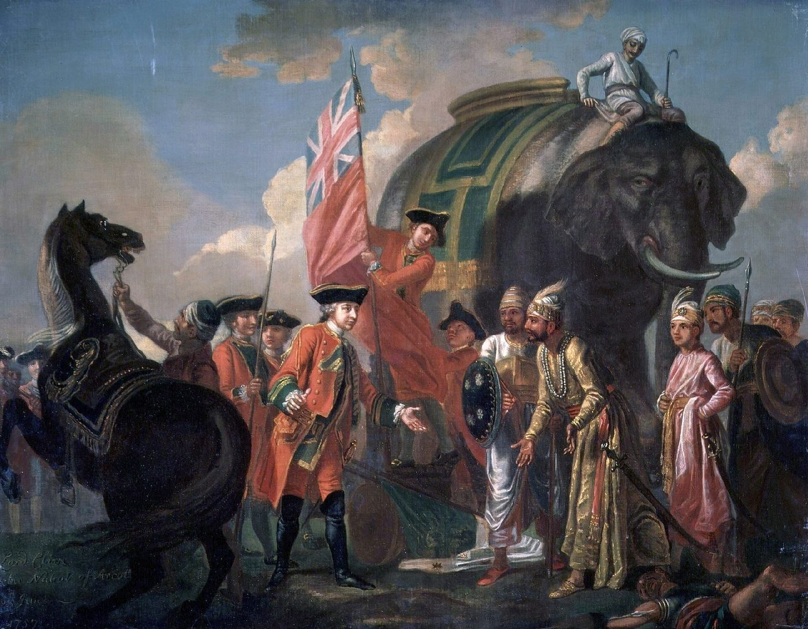
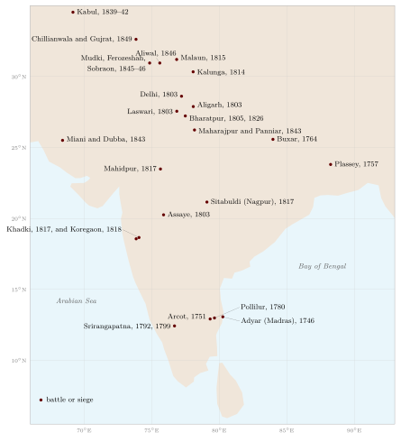
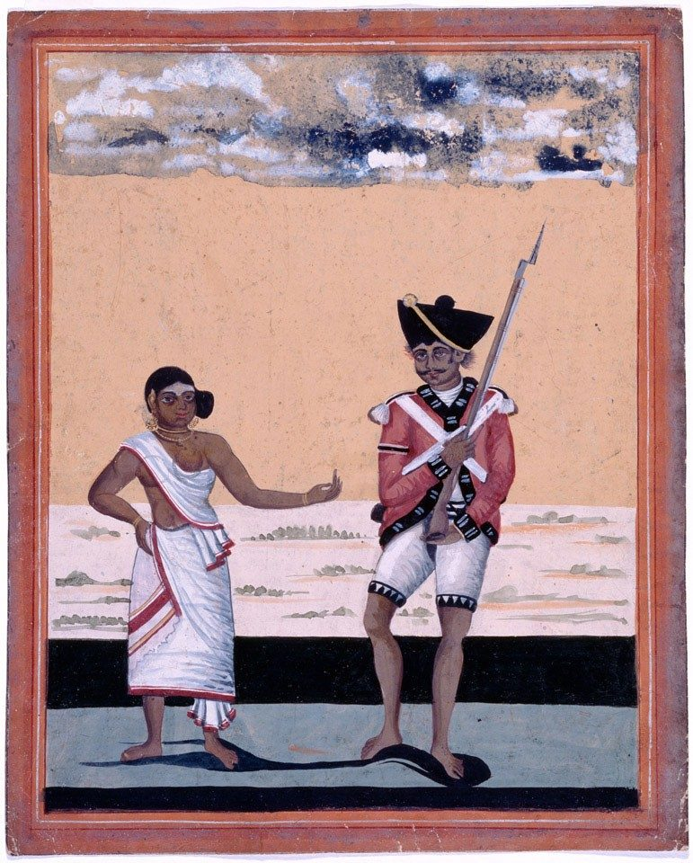

Chapter 19: Conquest, Sepoys and Disarmament: The Colonial Era¶
19.1 Introduction¶
Between the 1740s and the 1850s the English East India Company, a trading corporation, conquered most of the Indian subcontinent. It did so with armies composed overwhelmingly of Indian soldiers — the sepoys (from Persian sipāhī, soldier) — recruited from the same military labour market that had supplied the Mughals and their successors, drilled and officered in the European manner, and paid regularly from the revenues of the territories the Company acquired. After the great rising of 1857, the British Crown took over the Company’s territories and its armies, reorganised recruitment around the idea of “martial races”, and disarmed Indian society through the Arms Act of 1878. The Indian Army of the colonial state fought across the world in two world wars, and its officer corps was slowly Indianised before independence in 1947.
This chapter outlines that history, which ended the independent military traditions described in earlier chapters and shaped the modern armies of South Asia. It draws on the work of Seema Alavi, Douglas Peers, Kaushik Roy, Heather Streets, David Omissi and C. A. Bayly (Alavi 1995; Peers 1995; Roy 2011; Streets 2004; Omissi 1994; Bayly 1996).
19.2 The European Companies and the Sepoy¶
The Portuguese, Dutch, English and French trading companies that arrived in India in the sixteenth and seventeenth centuries maintained small garrisons of European soldiers and hired Indian guards and auxiliaries. The decisive innovation came in the Carnatic wars of the 1740s and 1750s (Section 9.24), when the French governor Dupleix and the English commanders found that locally recruited Indian infantry, drilled in the European manner and led by European officers, could defeat much larger Indian armies built around cavalry. Both companies raised such units, and by the 1750s the English Company’s settlements at Madras, Calcutta and Bombay each had an army of sepoys (Roy 2011).
The sepoys were not a new kind of soldier socially. They were recruited from the peasant communities that had long supplied soldiers to Indian rulers — in the case of the Bengal army, largely from the high-caste peasants (Brahmins and Rajputs) of Awadh and Bihar, the “eastern” (pūrbiyā) soldiers of the north Indian military labour market (Chapter 17) (Kolff 1990). What was new was the regularity of their pay, their uniform drill and discipline, and the permanence of their units. Seema Alavi has shown how the Company, to secure the loyalty of these soldiers, accommodated their caste and religious practices, granted them pensions and privileges, and created a distinctive “sepoy” culture that combined Indian and European elements (Alavi 1995).
19.3 The Conquest¶
19.3.1 Bengal: Plassey and Buxar¶
The Company’s political power began in Bengal. In 1757 Robert Clive, with an army of about three thousand men, two-thirds of them sepoys, defeated the Nawab Sirāj al-Daula at Plassey (Palāśī). The battle was decided less by fighting than by the defection of the Nawab’s commander Mīr Jaʿfar, whom the Company had promised to make Nawab (Figure 19.1). The real military test came in 1764 at Buxar, where the Company defeated the combined armies of Mīr Qāsim, the deposed Nawab of Bengal, Shujāʿ al-Daula of Awadh and the Mughal emperor Shāh ʿĀlam II. In 1765 the emperor granted the Company the dīwānī, the right to collect the revenues of Bengal, Bihar and Orissa. With these revenues the Company could pay large armies (Roy 2011).


19.3.2 Mysore, the Marathas and the Sikhs¶
The Company’s other wars were harder. Haidar Ali and Tipu Sultan of Mysore fought four wars against it between 1767 and 1799, and the Maratha powers three: in the first (1775–1782) they held their own; in the second (1803–1805) they were defeated at Assaye and Laswari; in the third (1817–1818) the Company destroyed the Pindari bands and the remaining Maratha powers, and the Peshwa’s territories were annexed (Gordon 1993). The last great independent Indian army, that of the Sikh kingdom of Punjab, was defeated in the two Anglo-Sikh wars of 1845–46 and 1848–49, and Punjab was annexed in 1849. The armies that the Company met in these wars are described in Chapter 18, and the most important battles in Section 19.4; Figure 19.2 shows where they were fought.

19.3.3 Why did the Company win?¶
Historians have offered several explanations for the Company’s success, and most would combine them (Roy 2011; Peers 1995; Bayly 1996):
-
Finance. The Company could pay its soldiers regularly from the land revenues of Bengal and other territories, and borrow from Indian bankers and in London; Indian states, whose revenues were often assigned to commanders and nobles, struggled to pay their armies (Section 18.12).
-
Discipline and organisation. The Company’s infantry and artillery were trained and organised for sustained, coordinated action, and its officers formed a cohesive corps.
-
Sea power. The Company could move troops and supplies by sea and could not be cut off from Britain.
-
Alliances and divisions. The Company exploited rivalries among Indian rulers, made subsidiary alliances in which Indian states paid for Company troops stationed in their territories, and benefited from succession disputes and defections.
-
Information. The Company built up intelligence networks, often taking over those of Indian states (Bayly 1996).
The older claim that Indian armies were simply technologically backward does not survive scrutiny: Indian states had excellent artillery, they raised European-style infantry, and they employed European officers (Chapter 18). The difference lay in the institutions that sustained armies over long wars. Douglas Peers has described the resulting colonial state as a “garrison state”, in which military needs dominated government and revenue (Peers 1995).
19.4 The Great Battles of the Conquest¶
The Company’s conquest of India was not a series of easy victories. Several of its battles were close-run, and some were defeats. A few are worth describing in more detail, because they show both the strengths of the Company’s armies and the capacity of Indian armies to resist them.
19.4.1 Assaye, 1803¶
In the Second Anglo-Maratha War, Major-General Arthur Wellesley, later Duke of Wellington, found the combined armies of Daulatrāv Shinde and the Bhosale ruler of Nagpur encamped at Assaye in the Deccan on 23 September 1803. His own force was much smaller — by his own account fewer than ten thousand men, many of them sepoys — facing an army several times larger, with a strong artillery and infantry battalions trained by European officers in Shinde’s service. Wellesley crossed the river Kaitna at an unguarded ford and attacked. The Maratha infantry and gunners fought well, changing front to meet the attack, and their artillery inflicted heavy casualties; but the Maratha army was defeated after hard fighting, and its guns were captured. The Company’s losses were very heavy for so small a force. Later the same year Gerard Lake defeated Shinde’s northern army at Laswari, where the Maratha infantry again fought with great determination (Gordon 1993; Roy 2011; Cooper 2003). Why these well-trained brigades lost is discussed in Section 18.6.
19.4.2 The Third Anglo-Maratha War, 1817–18¶
The final Maratha war began when the Peshwa Bājīrāv II attacked the Company’s residency at Pune in November 1817. He was defeated at Khadki (Kirkee) and pursued across the Deccan. At Koregaon on the Bhīmā river, on 1 January 1818, a small Company force of about eight hundred men, largely sepoys of the Bombay army, many of them from the Mahār community, under Captain Francis Staunton, held the village through a day of fighting against a much larger Peshwa army. The Peshwa’s forces broke off the action and moved away on the approach of a relieving Company force under General Smith, and Staunton’s detachment, its losses heavy, returned to Shirur the next day. The engagement was commemorated by the British with an obelisk, and in the twentieth century B. R. Ambedkar made it a symbol of Dalit courage; it remains a site of commemoration and of controversy. The Peshwa surrendered in June 1818, and his territories were annexed.
19.4.3 The Anglo-Sikh wars, 1845–49¶
The Sikh army of Punjab, built up by Ranjit Singh, was the most formidable opponent the Company met in India. In the First Anglo-Sikh War, the battle of Ferozeshah (21–22 December 1845) was nearly a British defeat: after a day and night of fighting, the British army was short of ammunition and its commanders considered retreat, but the Sikh commanders, divided and some of them in secret contact with the British, withdrew. At Sobraon (10 February 1846), the British stormed the Sikh entrenchments on the Sutlej, and many Sikh soldiers drowned when the bridge of boats behind them broke. In the Second Anglo-Sikh War, the battle of Chillianwala (13 January 1849) cost the British heavy casualties for an indecisive result, causing consternation in Britain; the war was decided at Gujrat (21 February 1849), where British artillery overwhelmed the Sikh army (Cunningham 1849; Grewal 1990). Joseph Davey Cunningham, a British officer who wrote a history of the Sikhs in 1849, was dismissed from his post for criticising the conduct of the war and the treachery of some Sikh leaders who had aided the British.
19.5 Wars on the Frontiers¶
The East India Company’s armies fought not only Indian states but also the neighbours of India. The war with Nepal (1814–1816) was hard fought (Section 18.9); the Gurkha soldiers of Nepal impressed their opponents, and from 1815, after the surrender at Malaun and even before the treaty of Sugauli, the Company began to recruit Gurkhas into its service, beginning a tradition that continues in the Indian and British armies today. The Anglo-Burmese wars (1824–26, 1852, 1885) led to the annexation of Burma in stages. The First Anglo-Afghan War (1839–1842) ended in disaster: the British force that had occupied Kabul was destroyed during its retreat in January 1842, one of the worst defeats suffered by a British army in Asia. In the decades after 1849, the north-western frontier with Afghanistan became the scene of almost continuous campaigning against the Pashtun tribes, culminating in the Tirah campaign of 1897–98, and the frontier became the training ground of the Indian Army (Omissi 1994). Inside India, too, the Company and the Crown fought the forest and hill peoples whose lands they took over, from the Kol rising of 1831–32 and the Santal hul of 1855–56 to Birsa Munda’s ulgulān of 1899–1900 (Section 4.15), and the hill peoples of the north-east into the twentieth century.
19.6 The Wars of the Company and the Crown¶
Table 19.1 lists the principal wars fought by the East India Company and, after 1858, by the Indian Army in South Asia and on its frontiers.
| Dates | War | Principal events and outcome |
|---|---|---|
| 1746–1763 | Carnatic wars | English and French companies and their allies; English supremacy in the south-east |
| 1757–1765 | Bengal | Plassey (1757), Buxar (1764); the dīwānī of Bengal (1765) |
| 1767–1799 | Anglo-Mysore wars | Pollilur (1780); Srirangapatna (1792, 1799); Tipu killed |
| 1775–1782 | First Anglo-Maratha war | Inconclusive; Treaty of Salbai |
| 1803–1805 | Second Anglo-Maratha war | Assaye, Laswari; Company control of Delhi |
| 1814–1816 | Anglo-Nepal war | Treaty of Sugauli; recruitment of Gurkhas |
| 1817–1818 | Third Anglo-Maratha war | Khadki, Koregaon; end of the Peshwas; Pindaris suppressed |
| 1824–1826 | First Anglo-Burmese war | Assam, Manipur and Arakan pass under British control |
| 1839–1842 | First Anglo-Afghan war | Occupation of Kabul; disastrous retreat of 1842 |
| 1843 | Sindh | Battles of Miani and Dubba; annexation of Sindh |
| 1845–1846 | First Anglo-Sikh war | Mudki, Ferozeshah, Aliwal, Sobraon |
| 1848–1849 | Second Anglo-Sikh war | Chillianwala, Gujrat; annexation of Punjab |
| 1857–1859 | The great rising | Delhi, Kanpur, Lucknow, Jhānsī; Crown rule from 1858 |
| 1878–1880 | Second Anglo-Afghan war | Occupation of Kabul; battle of Maiwand (1880) |
| 1885 | Third Anglo-Burmese war | Annexation of Upper Burma |
| 1891 | Anglo-Manipur war | Battle of Khongjom; British control of Manipur |
| 1897–1898 | Tirah campaign | Frontier war against the Afridi and Orakzai |
| 1919 | Third Anglo-Afghan war | Afghanistan gains control of its foreign affairs |
19.7 The Sepoy Army¶
By the 1850s the Company’s three armies of Bengal, Madras and Bombay together numbered over 250,000 men, of whom the great majority were Indian. Indian soldiers could rise only to the rank of subedār, below the most junior British officer. The relationship between the Company and its sepoys rested on a bargain: regular pay, pensions, honour and respect for caste and religion in exchange for loyal service. When the Company seemed to break this bargain, the sepoys resisted. At Vellore in 1806, new regulations on dress and appearance, which the soldiers believed threatened their religion, provoked a mutiny that was suppressed with heavy loss of life (Figure 19.3). At Barrackpore in 1824, sepoys ordered to serve in Burma, which required crossing the sea, refused, and were fired on. The General Service Enlistment Act of 1856, which required new recruits to serve overseas if ordered, was one of the grievances of 1857 (Alavi 1995).


19.8 The Rising of 1857¶
In May 1857 sepoys of the Bengal army mutinied at Meerut and marched to Delhi, where they proclaimed the aged Mughal emperor Bahādur Shāh as their ruler. The immediate cause was the rumour that the cartridges of the new Enfield rifle, which had to be bitten open, were greased with the fat of cows and pigs; the deeper causes included the annexation of Awadh in 1856, the home of many sepoys, grievances over pay and service, and wider discontent among landholders and princes. Kim Wagner has shown how rumours of a plot against the sepoys’ religion spread through the Bengal army in early 1857 and turned scattered grievances into a mutiny (Wagner 2010). The rising spread across north and central India, joined by civilians, peasants and dispossessed rulers such as the Rāṇī of Jhānsī, Nānā Sāhib and Begum Hazrat Mahal of Awadh (Chapter 16). Delhi, Kanpur and Lucknow saw prolonged fighting and atrocities on both sides; the British recaptured Delhi in September 1857, and the rising was suppressed by 1859 with great brutality, including mass executions.
The Madras and Bombay armies, and the newly raised regiments of Punjab, remained largely loyal and were used against the rebels. This fact shaped British policy for the next ninety years.
19.8.1 The suppression of 1857¶
The military campaigns of 1857–58 were the largest the British fought in India. The British besieged Delhi, held by the rebels, from June to September 1857, and finally stormed it after bitter street fighting. At Lucknow, the British Residency, with its garrison and civilians, was besieged for months and relieved only after two attempts, in September and November 1857. In central India, Sir Hugh Rose’s campaign of 1858 took Jhānsī and defeated the forces of Tātyā Ṭope and the Rāṇī of Jhānsī at Kalpi and Gwalior. Tātyā Ṭope continued a guerrilla campaign across central India until his capture and execution in 1859. The rebels, many of them former Company sepoys trained in the same methods as their opponents, lacked unified leadership, a common plan and reliable supplies of ammunition, and the British could draw on reinforcements from Britain and on the loyal armies of Madras, Bombay and Punjab.
19.9 Martial Races¶
After 1857 the Crown took over the government of India and its armies. The army was reorganised: the proportion of British to Indian troops was increased, artillery was kept largely in British hands, and recruitment shifted away from the high-caste peasants of Awadh and Bihar who had formed the core of the old Bengal army. Recruitment came to be concentrated in Punjab, the North-West Frontier, Nepal and a few other regions, among Sikhs, Punjabi Muslims, Pathans, Dogras, Jats, Gurkhas and some other communities.
This policy was justified by the theory of “martial races”, which held that some Indian communities were naturally warlike and others were not. The theory was given its most influential form by Lord Roberts, commander-in-chief in India from 1885 to 1893, and was later expounded in books such as George MacMunn’s The Martial Races of India (1933) (MacMunn 1933). Heather Streets has shown that the theory was a product of British imperial culture, combining ideas of race, masculinity and loyalty after 1857, and that it was used to justify recruitment from communities considered loyal and to exclude others, notably educated Bengalis and many of the communities of the south that had supplied the old Madras army (Streets 2004). David Omissi’s study of the Indian Army from 1860 to 1940 shows how recruitment, pay, honour and religion bound the “martial” soldiers to the army (Omissi 1994).
The theory had lasting effects. It reshaped the identities of the communities it favoured, which came to see military service as their tradition, and it stigmatised others as unmanly. The colonial stereotype of the “effeminate” Bengali provoked a nationalist response in the form of physical culture, wrestling and stick-fighting clubs (Chapter 15).
19.10 The Sepoy’s World¶
The Indian Army of the late nineteenth and early twentieth centuries was a world of its own. Its soldiers were recruited from particular districts and communities, often through family and village networks; they served in regiments organised by “class” (community), with their own religious teachers, festivals and customs, which the army supported. Pay, pensions and land grants made military service an attractive career for peasant families in Punjab, the Himalayan hills and other recruiting grounds, and soldiers’ remittances and pensions became an important part of the rural economy of these regions (Omissi 1994). Indian soldiers could rise to the rank of subedār or risaldār (later called Viceroy’s Commissioned Officers), but command remained in British hands until the gradual Indianisation of the officer corps after the First World War. Indian soldiers became eligible for the Victoria Cross, the highest British award for gallantry, in 1911; Sepoy Khudadad Khan, a Punjabi Muslim, was the first Indian to receive it, for his bravery at Ypres in 1914.
The relationship between the army and the soldiers rested on a mixture of material reward, honour, religion and personal loyalty to officers, which British officers consciously cultivated. When this relationship was disturbed — by religious grievances, by unfamiliar conditions of service, by political propaganda — mutinies could occur, as at Singapore in 1915, when Indian soldiers of the 5th Light Infantry mutinied amid rumours of being sent to fight the Ottoman empire.
19.11 The Princely States and Their Forces¶
About a third of the subcontinent remained under the rule of Indian princes who accepted British paramountcy. Their armies were reduced and restricted by treaty, and many became ceremonial forces. From the late 1880s some princely states were encouraged to maintain “Imperial Service Troops”, trained to the standard of the Indian Army and available for imperial service. These forces fought in the First World War; the Jodhpur and Mysore lancers took part in the capture of Haifa in Palestine in 1918, an action still commemorated in India. Princely forces were absorbed into the armies of India and Pakistan after 1947.
19.12 The Disarming of India¶
19.12.1 The Arms Act of 1878¶
In 1878 the Government of India passed the Indian Arms Act (Act XI of 1878), which required a licence to manufacture, sell, possess or carry firearms and other weapons, including swords. The Act exempted Europeans and certain other categories of person, and licences were granted to Indians at the discretion of officials. The Act remained in force, with amendments, until it was replaced by the Arms Act of 1959; the political controversy it provoked is described in Section 19.13.
19.12.2 Effects on martial traditions¶
The Arms Act, together with the disbandment of the armies of conquered states, the end of princely patronage of many martial communities, and the creation of a professional colonial army recruited from selected groups, transformed the place of arms in Indian society. Communities whose status had rested on military service — the Nāyars of Kerala, the poligar soldiery of Tamil Nadu, the paikas of Odisha, many Rajput and Maratha families — lost their role. Traditional arts that depended on weapons declined, while those that did not, such as wrestling, survived more easily. Earlier disarmament campaigns, such as those in Malabar after the Pazhassi revolt and in the south after the poligar wars, had already begun this process. It would be wrong, however, to attribute the decline of the martial arts to the Arms Act alone. The arts also declined because the kind of warfare they served had ended, and because new forms of sport and physical culture, many introduced through schools and the army, offered other models.
19.13 The Politics of the Arms Act¶
The Arms Act of 1878 became a political issue almost at once. Indian critics pointed out that it exempted Europeans and Eurasians while subjecting Indians, including men of rank, to the need for licences and to police searches; they argued that it humiliated Indians and left villages defenceless against wild animals and bandits. The Indian National Congress repeatedly passed resolutions from the 1880s onward calling for the Act’s reform and for the opening of military careers to Indians, linking disarmament to the wider exclusion of Indians from the defence of their own country. Some of the racial distinctions in the rules were modified in the early twentieth century, but the system of licences remained, and the possession of arms remained a privilege granted by the state. Independent India retained the principle of licensing in the Arms Act of 1959, while removing the racial distinctions of the colonial law.
19.14 Policing and the Lāṭhī¶
Disarmament went together with the creation of a colonial police. The police forces organised in the provinces after 1861 were armed mainly with the bamboo staff (lāṭhī), often tipped with iron, and with a smaller number of firearms. The lāṭhī, the traditional weapon of village watchmen and landlords’ retainers, thus became the instrument of colonial crowd control, used against peasant protests, strikes and nationalist demonstrations; the “lāṭhī charge” became a familiar feature of Indian political life and remains so. In the 1930s, the beating of non-violent protesters with lāṭhīs, as at the Dharasana salt works in 1930, was reported internationally and became a symbol of colonial repression. At the same time, nationalist and revolutionary clubs trained young men in lāṭhī play as a form of self-defence and physical culture (Chapter 15). The same weapon thus served both the colonial state and those who resisted it.
19.15 Indian Responses¶
Indian nationalists responded to the colonial image of Indians as unwarlike and to the experience of disarmament in several ways. In Maharashtra, B. G. Tilak promoted public festivals of Gaṇeśa (from 1893) and of Śivājī (from 1895), which included displays of physical culture. Swami Vivekananda called on young Indians to build “muscles of iron and nerves of steel”. Gymnasia and physical culture societies spread in Maharashtra, Bengal and elsewhere, combining wrestling, club-swinging, mallakhamb, stick-fighting and European gymnastics; in Bengal, revolutionary societies such as the Anushilan Samiti used such clubs to recruit and train young men (Mujumdar 1950). These movements laid the foundations of the twentieth-century revival of Indian martial arts (Chapter 20).
19.16 Indian Soldiers Overseas before 1914¶
Long before the world wars, Indian soldiers served the British empire outside India. Sepoys of the East India Company fought in the Dutch East Indies, in Egypt against the French in 1801, and in the Anglo-Burmese wars; Indian troops formed part of the British expeditions to Abyssinia in 1868, to Malta in 1878, to Egypt in 1882 and to Sudan; they fought in China during the Opium Wars and against the Boxer rising in 1900; and they garrisoned British posts from Aden to Hong Kong. Indian soldiers and police were also recruited for service in British colonies in East Africa and Southeast Asia. The Indian Army thus became, in the words often used by contemporaries, an imperial reserve, paid for largely by Indian revenues (Omissi 1994). Indian nationalists criticised the use of Indian money and Indian lives in imperial wars that, in their view, served British rather than Indian interests.
19.17 The Indian Army in the First World War¶
About 1.3 million Indians served in the First World War, which made the Indian Army one of the largest armies of the British empire. In 1914 Indian divisions were sent to France, where they arrived in time to help hold the line at Ypres and fought in the battles of 1914 and 1915 in conditions of cold, mud and trench warfare for which they were ill prepared. Indian cavalry remained on the Western Front until 1918. Most Indian troops, however, served in the campaigns against the Ottoman empire: in Mesopotamia, where an Indian force was besieged and forced to surrender at Kut al-Amara in 1916 before the British and Indian armies took Baghdad in 1917; in Egypt and Palestine; at Gallipoli; and in East Africa. The letters written by Indian soldiers from France, examined by the British censors, provide a rare record of the experiences and feelings of ordinary sepoys (Omissi 1994); Santanu Das has read them alongside soldiers’ songs, photographs and the writings of Indian civilians to recover the war’s place in Indian culture (Das 2018). The war brought new demands from Indian politicians for constitutional reform and for the Indianisation of the officer corps.
19.18 The Indian Army in the Second World War¶
The Second World War transformed the Indian Army. From a force of under two hundred thousand in 1939, it grew to about two and a half million by 1945, the largest volunteer army in history; recruitment spread far beyond the “martial races” to communities previously excluded (Cohen 1971; Omissi 1994). Indian divisions fought in East Africa, where they took part in the hard-fought battle of Keren in Eritrea in 1941; in the Western Desert of North Africa; in Iraq, Syria and Iran; and in Italy, including the battles around Monte Cassino in 1944. In Southeast Asia, Indian troops suffered defeat in Malaya and Singapore in 1942, where many were taken prisoner, and then formed the largest part of the army that fought the Japanese in Burma. The battles of Imphal and Kohima in 1944, in which the Japanese invasion of north-eastern India was defeated, and the reconquest of Burma in 1945 were fought largely by Indian divisions (Cohen 1971). Srinath Raghavan’s history of India’s war argues that the mobilisation of men, money and production for the war transformed the Indian economy and state and helped to make the post-war settlement of South Asia (Raghavan 2016).
The war also produced the Indian National Army, recruited largely from Indian prisoners of war in Malaya and Singapore, organised under Japanese auspices and led from 1943 by Subhas Chandra Bose, which fought alongside the Japanese in the Imphal campaign. The war’s demands on India — for men, money, food and materials — were immense, and they contributed to economic hardship and, in Bengal, to the catastrophic famine of 1943. The experience of the war, the expansion and Indianisation of the officer corps, and the political impact of the INA trials helped to bring British rule to an end. Table 19.2 summarises the main theatres in which Indian troops fought in the two world wars; it is intended as a guide to further reading rather than a complete record.
| Years | Theatre | Principal events |
|---|---|---|
| 1914–18 | France and Flanders | Indian Corps in the battles of 1914–15, including Ypres and Neuve Chapelle; Indian cavalry remained in France until 1918 |
| 1914–18 | Mesopotamia | Landing at Basra (1914); siege and surrender of Kut (1915–16); capture of Baghdad (1917) |
| 1914–18 | Egypt and Palestine | Defence of the Suez Canal (1915); cavalry in the advance through Palestine and Syria (1917–18), including Haifa (1918) |
| 1915 | Gallipoli | An Indian brigade and mule companies served throughout the campaign |
| 1914–18 | East Africa | Failed landing at Tanga (1914); long campaign against German forces |
| 1940–41 | East Africa | Battle of Keren in Eritrea (1941) |
| 1940–43 | North Africa | Western Desert campaigns, including El Alamein (1942) |
| 1941 | Iraq, Syria and Iran | Operations to secure the oilfields and supply routes |
| 1943–45 | Italy | Three Indian divisions in the advance up the peninsula, including Cassino (1944) |
| 1941–42 | Malaya and Singapore | Defeat and surrender; tens of thousands taken prisoner |
| 1942–45 | Burma and north-east India | Retreat from Burma (1942); Arakan; Imphal and Kohima (1944); reconquest of Burma (1945) |
19.19 The Indian Army and Indian Nationalism¶
The relationship between the Indian Army and the nationalist movement was complex. Many nationalists regarded the army as an instrument of colonial power, paid for by Indian taxes and used to suppress Indian protest and to fight Britain’s wars abroad. The Indian National Congress demanded the Indianisation of the officer corps and the reduction of military expenditure. Indianisation proceeded slowly: Indians were first admitted to King’s commissions after the First World War, and the Indian Military Academy at Dehradun opened only in 1932. At the same time, Indian soldiers’ service in the world wars strengthened the case for Indian self-government, and the rapid expansion of the army in the Second World War brought many Indians into the officer corps.
In the last years of British rule, the army’s loyalty came into question. The trials of officers of the Indian National Army in 1945–46 at the Red Fort in Delhi aroused widespread sympathy, and in February 1946 ratings of the Royal Indian Navy mutinied at Bombay and other ports, with support from parts of the population. These events convinced many British officials that the armed forces could no longer be relied upon to maintain British rule. In 1947 the army was divided between India and Pakistan, a process accompanied by the violence of Partition, in which soldiers were deployed to protect refugees and were sometimes accused of taking sides. Stephen Cohen’s study traces the army’s development from colonial institution to national army (Cohen 1971).
19.20 The Colonial Legacy¶
The colonial period left a deep imprint on the military institutions of South Asia. The regimental system, the recruitment of particular communities, the military academies, the traditions of the officer corps and the separation of the army from politics in India (though not in Pakistan) all have colonial roots (Cohen 1971). Several infantry regiments of the Indian Army trace their origins to the sepoy battalions of the Company: the Madras Regiment claims descent from units raised in the 1750s, among the oldest in the army. Regiments named after communities and regions — the Sikh, Rajput, Jat, Dogra, Garhwal, Kumaon, Mahar, Maratha Light Infantry and Gorkha regiments, among others — preserve the legacy of colonial “class” recruitment, adapted to a national army.
Regimental war cries recall older martial traditions. The Sikh Regiment’s cry is the Sikh affirmation Jo bole so nihāl, sat srī akāl; the Rajputana Rifles’ Rājā Rāmcandra kī jai; the Maratha Light Infantry’s Bol Śrī Chatrapati Śivājī Mahārāj kī jai; the Gorkha regiments’ Jai Mahākālī, āyo Gorkhālī. Many units worship their weapons at Daśahrā, regimental museums display the arms and memorabilia of earlier wars, and some units demonstrate kaḷarippayaṟṟu, gatka or mallakhamb. The regiments are institutions of a modern state, governed by modern law, but they draw on the symbols of older martial cultures to create cohesion and pride.
The colonial period also left a body of myth: the “martial races” theory, the idea of an unwarlike India redeemed by British discipline, and, in reaction, nationalist narratives of an ancient Indian military genius suppressed by colonialism. The history traced in this volume suggests a more complex picture, in which Indian soldiers, commanders and states were neither uniquely heroic nor uniquely weak, but participants in the long and shared history of war.
Further Reading¶
-
Alavi (1995): the Company’s sepoys in north India.
-
Roy (2011): warfare in South Asia, 1740–1849.
-
Peers (1995): the colonial “garrison state”.
-
Streets (2004): the ideology of “martial races”.
-
Omissi (1994): the Indian Army, 1860–1940.
-
Cohen (1971): the Indian Army from colonial to national institution.
-
Wagner (2010), Das (2018) and Raghavan (2016): the outbreak of 1857, the First World War in Indian culture, and India in the Second World War.